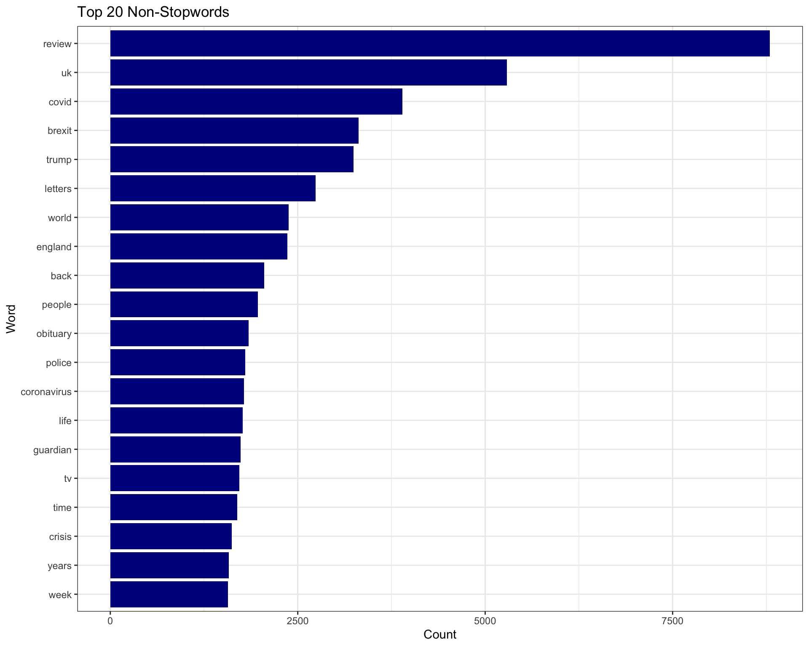
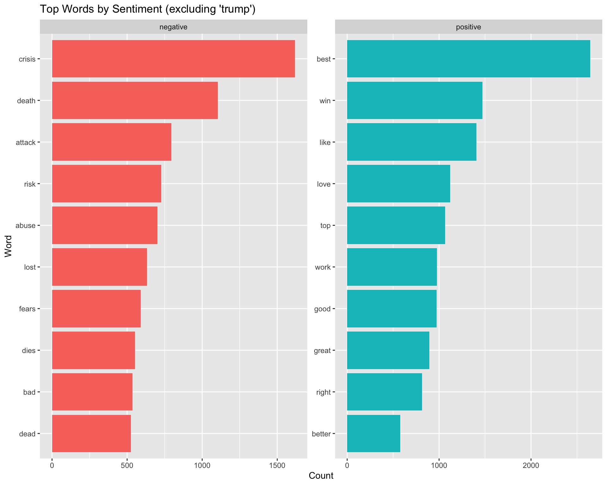
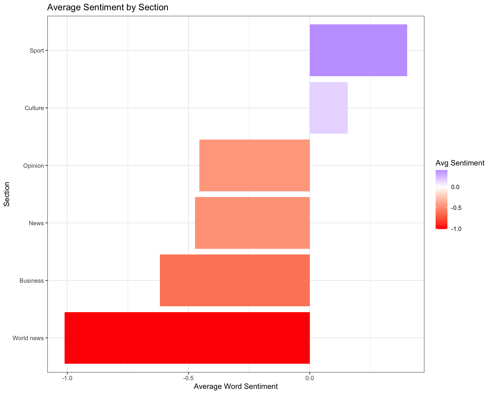
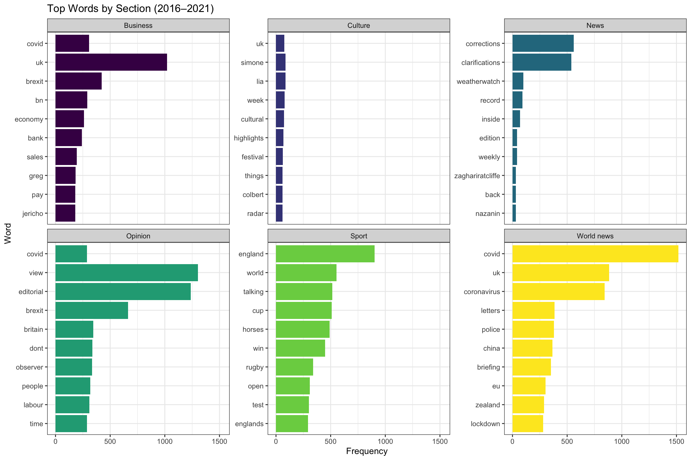

The Guardian Text Analysis
Introduction
The focus of this project is on the patterns in words and sentiment across Guardian publication years and sections. The dataset spans from 2016 - 2022, and includes 164 different article sections. Headlines are short, sharp strings of text designed to capture attention. Studying their structure and content offers insight into what issues dominated public conversation at different points in time, and how the tone of media shifted in response to political, social, and health events.
The goals of this analysis are:
To identify the most common words across headlines.
To examine how headline language changed by year.
To explore sentiment in headline wording and whether certain tones dominated certain years and article sections.
Background
The Guardian is a UK-based news outlet with global readership. Between 2016–2022, its coverage included major world events: Brexit (2016), the Trump presidency (2016–2020), COVID-19 (2020 onward), and global economic and political challenges. By analyzing title wording, we can identify recurring themes and shifts in tone, as well as the ways in which different sections of the paper highlight particular issues. To examine these shifts, the dataset requires cleaning and restructuring to make headlines comparable across years and sections.
Preparing the Data
Before we can analyze text, we need to clean it. Headlines contain a mix of lowercase and uppercase words, punctuation, and numbers. For consistency, all titles were converted to lowercase, punctuation removed, and new columns created to capture year and headline length. There are over 160 different article sections in this dataset. For simplicity, analysis focuses on six major sections: Business, Culture, News, Opinion, Sport, and World news. The year 2022 was removed as the year was not complete was the dataset was created.
Word Frequencies
A simple frequency count shows which words dominate. However, many of these are common stopwords like “the” or “and.” Removing stopwords reveals more meaningful terms.
The top 20 non-stopwords plot highlights which words dominate headlines after common stopwords are removed. Words such as “Brexit,” “Trump,” and “COVID” align with major historical events, showing how headline language mirrors the public discourse of each year. For example, “Brexit” dominates in 2016–2017, “Trump” during 2016–2020, and “COVID” spikes in 2020. The prominence of these terms in News and World articles confirms that high-volume sections drive the most recurrent topics, while words in Opinion and Culture reflect evaluative or thematic content.
Before interpreting the prominence of words, it is useful to consider which sections contribute the most content, since high-volume sections naturally influence overall frequency patterns.
| Section | Year | Number of Articles |
|---|---|---|
| Business | 2016 | 1118 |
| 2017 | 891 | |
| 2018 | 1008 | |
| 2019 | 999 | |
| 2020 | 1217 | |
| 2021 | 1168 | |
| Culture | 2016 | 213 |
| 2017 | 204 | |
| 2018 | 241 | |
| 2019 | 251 | |
| 2020 | 339 | |
| 2021 | 365 | |
| News | 2016 | 155 |
| 2017 | 201 | |
| 2018 | 221 | |
| 2019 | 238 | |
| 2020 | 204 | |
| 2021 | 204 | |
| Opinion | 2016 | 1766 |
| 2017 | 2069 | |
| 2018 | 2077 | |
| 2019 | 2018 | |
| 2020 | 1806 | |
| 2021 | 1621 | |
| Sport | 2016 | 1706 |
| 2017 | 1661 | |
| 2018 | 1597 | |
| 2019 | 1579 | |
| 2020 | 1404 | |
| 2021 | 1720 | |
| World news | 2016 | 1831 |
| 2017 | 1729 | |
| 2018 | 2034 | |
| 2019 | 2050 | |
| 2020 | 3619 | |
| 2021 | 2789 |
This table summarizes the number of Guardian articles published in six key sections between 2016 and 2021, excluding the incomplete year 2022. It highlights trends in content production across sections and years, showing which sections consistently generate the most coverage reflecting the Guardian’s emphasis on reporting current events and international affairs. News and Culture sections have smaller, more variable output, suggesting more selective or theme-driven coverage. This distribution provides context for interpreting word frequency and sentiment: high-volume sections naturally contribute more to the dataset’s overall language patterns, while lower-volume sections introduce distinctive or evaluative terms.
Sentiment in Headlines
Beyond frequency, it is useful to examine the sentiment, or tone of headlines.

Positive sentiment words like best, win, like, and love contrast with negative words like crisis, death, and attack. The word ‘Trump’ was removed because sentiment cannot be objectively assigned to a proper noun. While overall tone shows contrasts between positive and negative framing, it is equally important to see how these patterns evolved in response to major events year by year.
Change Over Time
![This bar chart shows the five most frequent non-stopwords in Guardian articles for each year from 2016 to 2022, with 'covid' and 'coronavirus' combined under 'covid'. The chart is intended to highlight how word frequency changes over time. Each year has up to five bars representing the top words, with the height indicating the number of occurrences. Colors differentiate the words, and the bars are grouped by year along the horizontal axis, showing that certain words, such as 'covid', dominate in specific years while other words appear only in earlier years.](The_Guardian_Text_Analysis_files/figure-html/unnamed-chunk-12-1.png)
The plot highlights how headline vocabulary shifted with major global and political events. “Brexit” was dominant in 2016–2017, reflecting the referendum and its aftermath, while “Trump” featured consistently from 2016 through 2020. In 2020, “COVID” surged far beyond all other terms, peaking alongside terms such as ‘lockdown’ and ‘vaccine’ in 2020–2021, reflecting how the pandemic reshaped media attention. These shifts illustrate how headlines mirror public discourse, with dominant terms closely tied to the most pressing global issues of the time.
In addition to changes across years, sentiment also varies depending on the section in which a headline appears.
Sentiment by Section

The sentiment analysis by section highlights variation in tone across Guardian coverage. Sport and Culture are the only two sections with predominantly positive sentiment. In contrast, Opinion, News, Business, and World news carry increasingly negative sentiment, with World news being the most negative overall. This distribution suggests that sections emphasizing commentary, current events, and financial coverage rely on more critical or pessimistic language, while of Culture and Sports coverage tend to adopt more neutral or favorable wording.

The frequency analysis of top words by section further illustrates the thematic divides in coverage. Each section is defined by its own vocabulary, reflecting the issues and events that dominate that area of reporting. The prominence of certain recurring terms underscores how language choices shape tone and focus across sections. When considered alongside the sentiment analysis, the word frequency plot reinforces the idea that subject matter is closely tied to the tone conveyed, with structural differences in reporting leading to differences in sentiment.
Together, frequency, sentiment, and section analysis illustrate the interaction between content volume, language, and tone across Guardian coverage.
Conclusion
This project shows how text analysis can reveal both the dominant topics and the tone of media coverage. Across 2016–2021, headline language tracked major world events such as Brexit, the Trump presidency, and the COVID-19 pandemic, with shifts in word frequency aligning closely with the timing of these developments. By removing common words and focusing on more meaningful terms, the analysis highlighted how global crises and political figures shaped headline priorities, while output differences between sections revealed the Guardian’s emphasis on current events and international reporting.
Sentiment and section-level analysis added another layer of interpretation, showing that Sport and Culture coverage leaned more positive, while Opinion, News, Business, and World news sections carried a more negative tone. The top words in each section further reflected these divides, illustrating how language and sentiment interact with subject matter.